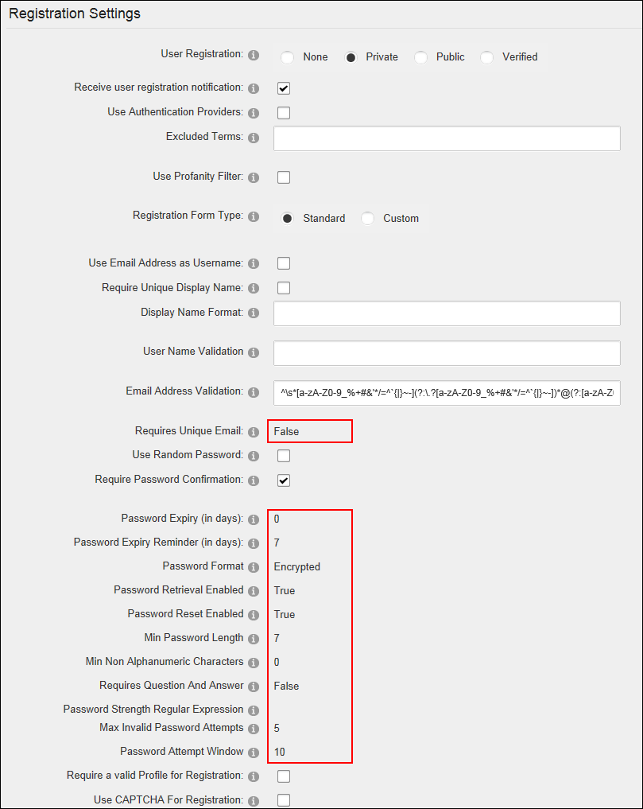

Viewing Pre-Configured Registration Settings
The following read only registration settings determine how new registrations are handled by this site. These settings can be configured in the web.config file or using the Host > Configuration Manager. See "Modifying Pre-Configured Registration Settings"
- Navigate to Admin >
 Site Settings
Site Settings
- Select the User Account Settings tab.
- Expand the Registration Settings section to view the following settings.
- Requires Unique Email: If set to True, each user will be required to provide a unique email address when registering. This prevents people from registering multiple times with the same email address. Note: This feature is only available with Standard Registration.
- Password Format: Displays the password format. The default option is Encrypted.
- Password Retrieval Enabled: If checked users can retrieve their password using the account login module.
- Password Reset Enabled: If checked Administrators can reset user passwords.
- Min Password Length: Displays the minimum number of characters required for a valid password.
- Min Non Alphanumeric Characters: Displays the minimum number of non-alphanumeric characters required for a valid password.
- Requires Question and Answer: Displays whether it is True or False that a user must answer a question to retrieve their password. If True, Administrators will be prevented from adding new users and editing user accounts on the site. The default setting is False.
- Password Strength Regular Expression: Displays the regular expression used to evaluate password complexity from the provider specified in the Provider property.
- Max Invalid Password Attempts: Displays the maximum number of times a user may attempt to login with invalid credentials before they are locked out of their account. If a user is locked out an Administrator must unlock the account.
- Password Attempt Window: The maximum number of minutes in which the set number of invalid login attempts (as set in the above field) must be made before lock out occurs.

Pre-configured Registration Settings with the Standard registration form displayed